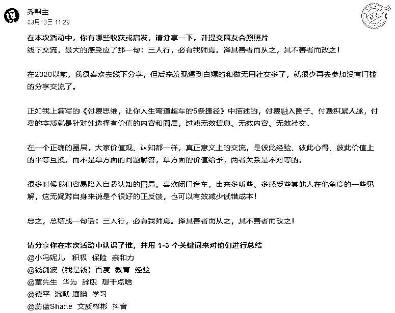

来源：https://w91h2gmtrn.feishu.cn/docx/SSizdBAA6oXBmkxRkF7cRwp4n6e
读前说明：
1、本文3909字实战干货，图文内容较长，建议用电脑浏览器阅读更加高效。
2、欢迎圈友来链接和交流（联系方式见文末），赚钱路上一起同行、一起成长！
3、乔帮主的AI实战训练营正在火爆招募中，在线下通过两天一夜手把手带大家玩转AI。全新课程不仅在课程内容价值上实现了质的飞跃，而且实战性更强，案例更加丰富：
文章目录：
1、航海为什么是21天？
2、你从航海最想得些到什么呢？
3、我是如何选择航海项目的？
4、我是如何打满211次卡，航海2240里的？
4.1、航海时间安排
4.2、目标驱动 + 持续的执行力
4.3、自我激励
4.4、圈层正反馈激励
5、11个航海项目，我具体收获了些什么？
大家好，我是乔帮主。这次参加的航海项目有点多，终于游上岸了。
总共参加11个航海，10个航海项目打满卡21天*10=210次卡，1个同城航海聚会打卡1次，航海2240里（精选13次）。
微信群中高手分享1次，生财星球分享3次，公众号推文6次。21天内学完10个航海项目所有的航海手册学习，并学习100余次群中高手分享，每个项目都坚持参与实操跑完SOP流程。
期间我也经历过纠结、颓废、摆烂、想放弃的时候，但不断通过目标驱动 + 持续执行力 + 自我激励 + 圈层正反馈激励，算是打满上岸了。
借助这个机会来复盘一下收获和感悟，记录下人生精彩瞬间。
航海为什么不是30天，不是20天，不是15天，为什么要定为21天？
这是因为21天养成一个规律叫21天定律也叫21天法则。是通过21天的正确重复练习，养成一个好习惯的一种方法。
据研究，大脑构筑一条新的神经通道需要21天时间。所以，人的行为暗示，经21天以上的重复，会形成习惯，而90天以上的重复，会形成稳定的习惯。人们把一个人的新习惯或理念的形成并得以巩固至少需要21天的现象。
有人想通过航海拿到结果（引到流量，赚到钱）；
有人想从航海学习成长，掌握相应技能，了解相应行业和方向；
也有人想从航海链接人，通过资源整合，碰撞出新的合作机会；
当然我这三方面目的都有，但并非我想从航海中最想得到的。
2020年，我辞职出来创业做社交APP，但由于技术人员的认知局限和盲目自信，导致搞APP最终难产夭折。这让我想起了亦仁那句话，亏钱姿势之“非得做个产品”。
2022年准备做知识付费赛道方向，开始做同行对标账号调研。但同时这一年经历了两件重大的变故事情，让我这一年持续的在精神内耗。
我出来创业，我大哥曾一直在劝我，让我回去上班。我印象很深刻他的一番话：“他说在在公司里上班有这么个平台，有对应的圈子，自己才有归属感。你一个人搞，没平台，没圈子，很难成功。”
对于他的这番话，我是认同的。但每个创业者都需要经历一个从0到1，从无到有的过程。很多人说创业不易，但这世间就没有什么是容易的，都是需要你付出、都是需要你努力去争取的。
为了找到一个平台，一个圈子，吸取正能量，得到志同道合的人的正反馈，治愈我的精神内耗。这便是我在生财这个平台下参加航海，并通过21天定律最想得到的。
在参加航海项目的考虑和选择上，并不是多多益善。没有规划且盲目的报名和选择，最终只会浪费自己的时间，最后还陷入被动的负面情绪中。
我在项目的选择上，除了想治愈精神内耗外，其次就是想从航海学习成长，掌握相应技能，了解相应行业和方向、了解相应引流平台的一线操作的SOP，以便我对后续工作做出布局和规划。
所以对我来说，选择对自身有欠缺、对我做的事情整体上是有帮助的，这是我首要考虑的。但选着选着，就报名10个项目了，再加1个同城航海，就成了11个航海项目。
这让我想到，叶师傅那句话：我要打10个~哈哈
因为我做知识付费赛道方向，所以我在项目的选择上，希望层层关联，这样有助于自己打通所有商业SOP流程闭环。这样后面再航海的过程中，也不会太吃力和被动。
我每天工作时间在12小时左右，其中花2小时写10个项目的日志总结，花6小时左右航海实践，剩余4小时倒腾下其他的工作事情。
还记得航海刚开始开船的时候，10个航海大群 + 10个航海通知群，那可是信息爆炸了。我刚开始我还坚持群里每条信息都看，坚持了三天，我看信息速度实在顶不住20个群里刷信息的速度。
后来我就只关注通知群里同步的高手分享和优秀船员的记录，对重要信息的提炼，这对信息做了很大程度降噪。所以在我们工作生活中，学会做信息降噪、减少无用社交，让自己专注力在一些重要的事情和人身上，这是高效工作和生活必备的能力。
通过上文的金字塔模型，看似独立的航海项目。其实在我们整个商业视角，是从基础驱动层 时间管理 + 资料整理 + 同城航海聚会 --> 前端抖音+音小红书等公域引流 --> 后端公众号 + 朋友圈 + 社群 转换变现 --> Web3入门 + AI绘画&ChatGPT 持续优化迭代，这是一套SOP变现闭环。
明白这一个知识网络结构，所以在后面的实践过程，每个项目只是自己赚钱路径一个环节，环环相扣，这样自己在知识的积累、内容的输出和打卡上就做到了心中有粮，就不会那么不知所措。
有不少圈友在21航海就拿到结果，获得不少的流量和收入。我们也没必要眼馋，成功的背后绝非偶然。很多时候我们只是看到别人光鲜数据的一面，忽略了别人背后的付出和经历的磨难，也忽略了达到这一结果而需要的能力。
我也是一个在赚钱路上砥砺前行的小学生，更多我们需要学习参考 + 复制模仿别人的成功经验，提升自己在认知力、执行力、专业力方面的能力，找到属于自己的可执行路径。
绝大多数圈友其实都是小白，在某些项目都是初学入门级别（包括我也是），所以在航海前，我们要做足功课和准备，了解自身能力、确定自己要做的事情方向，然后再制订参加航海需要的目标结果。
在目标驱动的前提下，这样自己也不会因为其他圈友节奏而打乱自己的节奏让自己吃力，进而让自己陷入焦虑、摆烂放弃。
然后就是持续的执行力，其实只要执行到位，铁棒也能磨成针，没有干不成的事情！相比社群里《玩赚ChatGPT社群精益创业的七天实录》这群小伙们的执行力，相比社群里第一波吃到ChatGPT红利的小伙伴。而我还是在这次航海中才把ChatGPT用起来，感叹自愧不如！
21天航海，只是你成功路上很小的一次缩影。在目标驱动的前提下，持续的执行力是需要自我激励，再加上圈层正反馈激励。
很多人说没办法坚持，是因为工作忙、时间不够等，大多数情况下，我们总会为自己不想做的事情找些看似那么合理的理由。回过头，这也只是自己逃避的一个借口。
驱动力不够，导致执行力跟不上，说明自己对赚钱欲望还不够，说明自己受的刺激还不够而已。
正如亦仁说的那句话：“如果有人在你身上绑了一颗炸弹，要求你一年之内必须赚到100万，且不能违法，如果一年之内你没赚到，炸弹将会自动引爆，你会怎么去赚这100万？ ”
除了自我激励外，我们也还需圈层正反馈激励，进一步让自己具有持续的执行力。而想得到圈层正反馈，最核心的就是通过分享的形式，坚持利他。
自己的成长经历，心得感悟，经验收获，积极向上的正能量，都可以跟大家分享。持续的分享 + 利他，总会筛选出志同道合的小伙伴，得到别人的尊重和支持。这些在马洛斯需求模型最顶层的需求，绝对能给到你绝大的动力，和持续的能量。
我在公众号爆款笔记、资料整理、小红书、社群运营等微信群的聊天分享，在知识星球、公众号、朋友圈持续的价值干货内容输出分享。得到很多+很多志同道合圈友的支持、感谢和一些案例、实践的正反馈，利他便是利己，这也是持续的动力。
比如这篇《利用技术思维，高效打造资料&素材军火库，持续提升你的内容输出火力》在微信群里和知识星球的分享的，收到了125个点赞，和200篇作业打卡正反馈。

比如这篇《运营必备工具大集合 | 黑科技神器 | 花了3年搜集整理的4000G工具箱免费送给圈友们》在知识星球里分享的，点赞直接四百多，得到了很多圈友的持续正反馈！

在生财这么个平台下，通过参加航海，吸取能量，得到志同道合的人的正反馈，治愈我的精神内耗，这便是我通过21天定律收获最大的。
当然不仅仅在内在精神层面的收获，也在具体项目上有不少收获，总结如下：

更是遇到一群志同道合的小伙伴，众人拾柴火焰高，赚钱路上不孤单（排名不分先后）：
@小冯妮儿：在做个人IP和社群这块，分享了敢于收高客单价（不要为了搞流量而搞流量，在流量固定情况，敢于收高客单价），社群预售的玩法（不要等产品做出来了再去推广，产品没出来就可以招收得到对应正反馈）。
@钱剑波（我是钱）：解决了个人老是遇到低用户价值群体方面的困惑，要去有高价值鱼多的地方去捞鱼。
@宝哥：搞流量赚钱路上的志同道合的小伙伴，宝哥没事就喜欢跟我弹语音、弹视频，我也经常找他问些起号的小白问题。
@绿兔只 @庆庆 @唐糖：收获几个合伙人，有着共同价值观和理想，期待一起做些事情的小伙伴们。
@塔塔： 在RPA自动化方面给了我较多的经验和正反馈。
@小千哥：在ChatGPT卖号方面交流了较多经验和心得。
@闲富 在技术赚钱，黑灰产方面交流了较多心得感悟和实战经验。
@成都礼品定制一发哥 @剑眉大侠 @Chen：反馈了很多其他技术平台、技术场景和案例。
More.......
乔帮主的AI实战训练营正在火爆招募中，在线下通过两天一夜手把手带大家玩转AI。全新课程不仅在课程内容价值上实现了质的飞跃，而且实战性更强，案例更加丰富：
往期干货精选：
往期干货合集：
微信：qiaobangzhu-cn，添加请备注：生财圈友。欢迎交流！
公众号：点金乔帮主